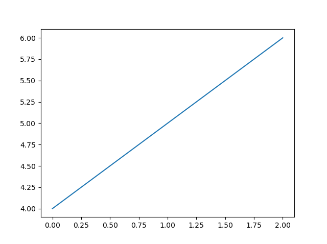
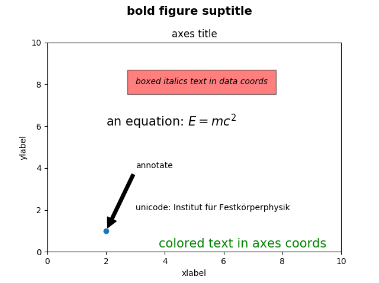
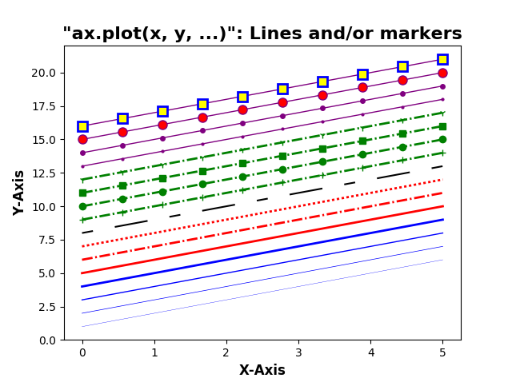
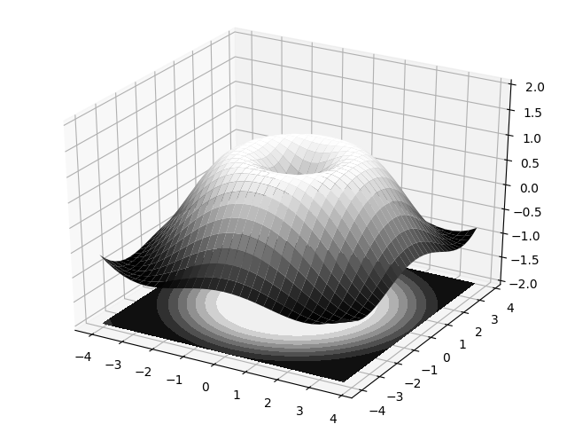

Introduction à Python pour les ingénieurs
Feb 7, 2019
Table des matières
Introduction
Avoir Python installé sur sa machine
Distribution Anaconda
Comment démarrer le navigateur Anaconda?
Spyder
Bibliothèques Python largement utilisées
Bibliothèque numérique: numpy
Bibliothèque Python de visualisation des données: matplotlib
Bibliothèque scientifique python: scipy
Introduction
Python (http://www.python.org/) est un langage de programmation moderne de haut niveau, orienté objet et d'usage général.
Caractéristiques générales de Python :
- Langage simple:
- facile à lire et à apprendre avec une syntaxe minimaliste.
- Langage concis et expressif:
- moins de lignes de code
- moins de bugs
- plus facile à maintenir.
- Typé dynamiquement:
- Pas besoin de définir le type des variables, les arguments ou le type des fonctions.
- La gestion automatique de la mémoire:
- Aucune nécessité d'allouer explicitement et désallouer la mémoire pour les variables et les tableaux de données. Aucun bug de fuite de mémoire.
- Interprété:
- Pas besoin de compiler le code. L'interpréteur Python lit et exécute le code python directement.
- Le principal avantage est la facilité de programmation, qui minimise le temps nécessaire pour développer, déboguer et maintenir le code.
- Langage bien conçu qui encourage les bonnes pratiques de programmation:
- Modulaire et orientée objet, permet l'encapsulation et la réutilisation de code. Il en résulte souvent un code plus transparent, plus facile à améliorer et sans bug.
- Documentation intégré avec le code.
- De nombreuses bibliothèques standards, et de nombreux packages add-on.
Avoir Python installé sur sa machine
L’installation d’un environnement Python complet peut-être une vraie galère. Déjà, il faut télécharger Python et l’installer. Par la suite, télécharger un à un les packages dont on a besoin. Parfois, le nombre de ces librairies peut-être grand.Par ailleurs, il faut s’assurer L’installation d’un environnement Python complet peut-être une vraie galère. Déjà, il faut télécharger Python et l’installer. Par la suite, télécharger un à un les packages dont on a besoin. Parfois, le nombre de ces librairies peut-être grand.
Par ailleurs, il faut s’assurer de la compatibilité entre les versions des différentes packages qu’on a à télécharger.
Bref, ce n’est pas amusant!
Distribution Anaconda
Nous demandons à tous les étudiants de télécharger Anaconda. Pour cela, il faut télécharger un installeur à partir de https://www.anaconda.com/download/, correspondant à votre système d’exploitation (Windows, Mac OS X, Linux). Il faut choisir entre 32 bits ou 64 bits (pour la version Python 3) selon que votre système d’exploitation est 32 bits ou 64 bits.Comment démarrer le navigateur Anaconda?
Lorsque vous installez Anaconda sous Windows, Linux ou macOS, une icône est automatiquement ajoutée au menu de votre programme et/ou à votre bureau pour lancer Anaconda Navigator. Vous pouvez également lancer Anaconda Navigator à partir d'une invite de commande Windows ou d'un terminal ubuntu à l'aide de la commande suivante:
$ anaconda-navigator
Différentes distributions Linux telles que CentOS ou Ubuntu ont de nombreux systèmes permettant d’ajouter des raccourcis aux menus et au bureau. Anaconda n’ajoute donc pas ces raccourcis automatiquement. À la place, vous pouvez utiliser votre système d'exploitation pour créer des raccourcis qui exécutent la commande anaconda-navigator sur le bureau ou dans le menu principal du système d'exploitation, ou les deux.
Figure 1: Interface graphique du navigateur Anaconda sous Windows

Anaconda installe plusieurs exécutables pour développer en Python dans le répertoire anaconda/bin, sans toujours créer des raccourcis sur le bureau ou dans un menu. Vous pouvez lancer Spyder ou le notebook Jupyter depuis le navigateur Anaconda.
Spyder
Pour le développement de programmes en langage Python, des applications spéciales appelées IDE (Integrated Development Environment) peuvent être utilisées. Les IDE les plus avancés ont des éditeurs, des consoles, des outils pour organiser des suites de programmes et de bibliothèques, un correcteur orthographique (spell-checking) et une complétion automatiques (auto-completion) pour les scripts partiellement écrits (ces outils connaissent la syntaxe du langage de programmation) et des outils de débogage.Utiliser un bon éditeur pour programmer en Python est bon. Utiliser un vrai IDE est encore plus confortable et puissant. Spyder (Scientific PYthon Development EnviRonment) semble actuellement très répandu pour l’utilisation scientifique de Python.
Spyder est un environnement de développement interactif gratuit inclus avec Anaconda. Il comprend des fonctionnalités d'édition, de test interactif, de débogage et d'introspection.
Après avoir installé Anaconda, vous pouvez démarrer Spyder sur macOS, Linux ou Windows en ouvrant une fenêtre de terminal (Ubuntu/macOS) ou d'invite de commande (Windows) et en exécutant la commande spyder.
Figure 2: Spyder sous Windows.

Bibliothèques Python largement utilisées
Bibliothèque numérique: numpy
numpy (http://www.numpy.org): Tous les codes numériques Python actuels sont basés sur la bibliothèque numpy. La bibliothèque numpy fournit des structures de données permettant de représenter une grande variété de tableaux, ainsi que des méthodes et des fonctions permettant de fonctionner sur de tels tableaux. numpy fournit le back-end numérique pour presque toutes les bibliothèques scientifiques ou techniques de Python. C'est donc une partie très importante de l'écosystème scientifique Python.
Création de tableaux numpy
Il existe un certain nombre de façons d’initialiser de nouveaux tableaux numpy, par exemple à partir de:- liste ou tuple Python.
- en utilisant des fonctions dédiées à la génération de tableaux numpy, tels que
arange,linspace, etc. - lire des données à partir de fichiers.
numpy.array.
In [1]: from numpy import array # importation
In [2]: v = array([1,2,3,4]) # un vecteur: l'argument de la fonction array est une liste Python
...: v
Out[2]: array([1, 2, 3, 4])
In [3]: M = array([[1, 2], [3, 4]]) # une matrice: l'argument de la fonction array est une liste Python imbriquée
...: M
Out[3]:
array([[1, 2],
[3, 4]])
Les objets v et M sont, les deux, du type ndarray fourni par le module numpy.
Nous pouvons vérifier ça par un simple code:
In [4]: print("Le type de v est: ", type(v))
Le type de v est: <class 'numpy.ndarray'>
In [5]: print("Le type de M est: ", type(M))
Le type de M est: <class 'numpy.ndarray'>
La différence entre les tableaux v et M réside uniquement dans leurs formes. Nous pouvons obtenir des informations sur la forme d'un tableau en utilisant la propriété ndarray.shape.
In [6]: print("La forme de v est: ", v.shape)
La forme de v est: (4,)
In [7]: print("La forme de M est: ", M.shape)
La forme de M est: (2, 2)
Utilisation de fonctions génératrices de tableaux
Pour les tableaux de grande taille, il est pratique d'initialiser les données manuellement, en utilisant des listes pythons explicites. Au lieu de cela, nous pouvons utiliser l’une des nombreuses fonctions denumpy qui génère des tableaux de différentes formes.
Certains des plus communs sont:
-
arange() -
linspace()etlogspace() -
mgrid()etmeshgrid() -
diag() -
zeros()etones() - etc.
arange() :
In [19]: x = arange(0, 10, 1) # Arguments: start, stop, step
...: x
Out[19]: array([0, 1, 2, 3, 4, 5, 6, 7, 8, 9])
In [23]: x = arange(-2, 2, 0.1)
...: x
Out[23]:
array([-2.00000000e+00, -1.90000000e+00, -1.80000000e+00, -1.70000000e+00,
-1.60000000e+00, -1.50000000e+00, -1.40000000e+00, -1.30000000e+00,
-1.20000000e+00, -1.10000000e+00, -1.00000000e+00, -9.00000000e-01,
-8.00000000e-01, -7.00000000e-01, -6.00000000e-01, -5.00000000e-01,
-4.00000000e-01, -3.00000000e-01, -2.00000000e-01, -1.00000000e-01,
1.77635684e-15, 1.00000000e-01, 2.00000000e-01, 3.00000000e-01,
4.00000000e-01, 5.00000000e-01, 6.00000000e-01, 7.00000000e-01,
8.00000000e-01, 9.00000000e-01, 1.00000000e+00, 1.10000000e+00,
1.20000000e+00, 1.30000000e+00, 1.40000000e+00, 1.50000000e+00,
1.60000000e+00, 1.70000000e+00, 1.80000000e+00, 1.90000000e+00])
Fonctions linspace() et logspace():
En utilisant linspace, les deux points finaux sont inclus:
In [24]: linspace(0, 10, 20) # linspace(star, stop, Nombre de points)
Out[24]:
array([ 0. , 0.52631579, 1.05263158, 1.57894737, 2.10526316,
2.63157895, 3.15789474, 3.68421053, 4.21052632, 4.73684211,
5.26315789, 5.78947368, 6.31578947, 6.84210526, 7.36842105,
7.89473684, 8.42105263, 8.94736842, 9.47368421, 10. ])
In [25]: logspace(0, 10, 10, base=e)
Out[25]:
array([1.00000000e+00, 3.03773178e+00, 9.22781435e+00, 2.80316249e+01,
8.51525577e+01, 2.58670631e+02, 7.85771994e+02, 2.38696456e+03,
7.25095809e+03, 2.20264658e+04])
Fonctions mgrid() et meshgrid():
In [26]: x, y = mgrid[0:5, 0:5] # Similaire à meshgrid dans MATLAB
...: x
Out[26]:
array([[0, 0, 0, 0, 0],
[1, 1, 1, 1, 1],
[2, 2, 2, 2, 2],
[3, 3, 3, 3, 3],
[4, 4, 4, 4, 4]])
In [27]: y
Out[27]:
array([[0, 1, 2, 3, 4],
[0, 1, 2, 3, 4],
[0, 1, 2, 3, 4],
[0, 1, 2, 3, 4],
[0, 1, 2, 3, 4]])
In [31]: x, y = meshgrid(linspace(0,2,6),linspace(0,2,6))
...: x
Out[31]:
array([[0. , 0.4, 0.8, 1.2, 1.6, 2. ],
[0. , 0.4, 0.8, 1.2, 1.6, 2. ],
[0. , 0.4, 0.8, 1.2, 1.6, 2. ],
[0. , 0.4, 0.8, 1.2, 1.6, 2. ],
[0. , 0.4, 0.8, 1.2, 1.6, 2. ],
[0. , 0.4, 0.8, 1.2, 1.6, 2. ]])
In [32]: y
Out[32]:
array([[0. , 0. , 0. , 0. , 0. , 0. ],
[0.4, 0.4, 0.4, 0.4, 0.4, 0.4],
[0.8, 0.8, 0.8, 0.8, 0.8, 0.8],
[1.2, 1.2, 1.2, 1.2, 1.2, 1.2],
[1.6, 1.6, 1.6, 1.6, 1.6, 1.6],
[2. , 2. , 2. , 2. , 2. , 2. ]])
Fonctions rand(), randint():
Nombres aléatoires uniformes dans [0,1[ dans une matrice (3,2)
In [37]: rand(3,2)
Out[37]:
array([[0.01900499, 0.10872428],
[0.78849226, 0.22114384],
[0.88739675, 0.94190273]])
Générer un tableau 2 x 4 d'entiers compris entre 0 et 4 inclus.
In [39]: randint(5, size=(2, 4))
Out[39]:
array([[0, 1, 4, 4],
[4, 0, 0, 4]])
Fonction diag():
In [40]: # Une matrice diagonale
...: diag([1,2,3])
Out[40]:
array([[1, 0, 0],
[0, 2, 0],
[0, 0, 3]])
In [41]: # Diagonale avec décalage de la diagonale principale
...: diag([1,2,3], k=3)
Out[41]:
array([[0, 0, 0, 1, 0, 0],
[0, 0, 0, 0, 2, 0],
[0, 0, 0, 0, 0, 3],
[0, 0, 0, 0, 0, 0],
[0, 0, 0, 0, 0, 0],
[0, 0, 0, 0, 0, 0]])
Fonctions zeros() et ones():
In [42]: zeros((3,3))
Out[42]:
array([[0., 0., 0.],
[0., 0., 0.],
[0., 0., 0.]])
In [43]: ones((3,3))
Out[43]:
array([[1., 1., 1.],
[1., 1., 1.],
[1., 1., 1.]])
Lecture et écriture de données
Écriture de données
Le module numpy contient une fonction très pratique, savetxt, permettant d’enregistrer des données tabulaires. Les données doivent être stockées dans un tableau numpy à deux dimensions. La fonction savetxt permet de contrôler le format des nombres dans chaque colonne (fmt), un en-tête peut être ajouté (header) et les lignes d'en-tête commencent par un caractère de commentaire (comment).
Pour stoker les valeurs de \( cos(x) \) avec \( x \in [0, 2 \pi] \) dans un fichier cosinus.dat, le code est comme ci-dessous:
'''Créer un tableau à deux dimensions de
[x, cos (x)] dans chaque ligne'''
import numpy as np
x = np.linspace(0, 2*np.pi, 200) # 200 valeurs de x
# un tableau 2 colonnes 200 lignes
data = np.array([x, np.cos(x)]).transpose()
# Écrire un tableau de données dans un fichier sous forme de tableau
np.savetxt('cosinus.dat', data, fmt=['%.2f', '%.4f'],
header='x cos(x)', comments='#')
Le fichier cosinus.dat est créé dans le répertoire de travail:
# x cos(x)
0.00 1.0000
0.03 0.9995
0.06 0.9980
0.09 0.9955
0.13 0.9920
0.16 0.9876
0.19 0.9821
0.22 0.9757
0.25 0.9683
... ......
... ......
Lecture de données
Les données du fichier cosinus.dat peuvent être lues dans un tableau numpy par la fonction loadtxt (vous pouvez utiliser la commande help(loadtxt) dans le notebook pour comprendre l'utilité des arguments entre les parenthèse):
In [51]: data = np.loadtxt('cosinus.dat', comments='#')
...: data
Out[51]:
array([[ 0. , 1. ],
[ 0.03 , 0.9995],
[ 0.06 , 0.998 ],
[ 0.09 , 0.9955],
[ 0.13 , 0.992 ],
[ 0.16 , 0.9876],
[ 0.19 , 0.9821],
[ 0.22 , 0.9757],
[ 0.25 , 0.9683],
[ 0.28 , 0.9599],
..................
..................
..................
[ 6.22 , 0.998 ],
[ 6.25 , 0.9995],
[ 6.28 , 1. ]])
Note
Les lignes commençant par le caractère de commentaire sont ignorées lors de la lecture. L'objet data résultant est un tableau à deux dimensions: data[i, j] contient le numéro de ligne i et le numéro de colonne j dans la table, c'est-à-dire que data[i, 0] contiennent la valeur x et que data[i, 1] la valeur cos(x) dans la i-ème ligne.
Nous pouvons utiliser le fichier cosinus.dat pour tracer la fonction \( cos(x) \) comme indiqué dans le code suivant:
import numpy as np
import matplotlib.pyplot as plt
# Charger les données du fichier 'cosinus.dat'
X, C = np.loadtxt('cosinus.dat', comments='#', unpack=True)
# Tracer C en fonction de X
plt.figure(figsize=(8, 5), dpi=100)
plt.plot(X,C)
plt.savefig("fonct_trig4.png")
plt.savefig("fonct_trig4.pdf")
plt.show()
La sortie de ce code est la Figure 3.
Figure 3: Fonction trigonométrique, \( cos(x) \), générée à partir d'un fichier.
Bibliothèque Python de visualisation des données: matplotlib
matplotlib (http://matplotlib.org/) est une excellente bibliothèque graphique 2D et 3D pour générer des graphiques scientifiques. Voici quelques-uns des nombreux avantages de cette bibliothèque:
- Facile à utiliser
- Prise en charge des étiquettes et des textes formatés LaTeX
- Un excellent contrôle des éléments d'une figure, y compris la taille et la résolution (DPI).
- Sortie de haute qualité dans de nombreux formats, y compris PNG, PDF, SVG, EPS, ...
- GUI (Graphical User Interface) pour explorer interactivement les figures.
Documentation en ligne et Galerie
Vous trouverez plus d'informations, y compris une documentation complète avec une vaste galerie d'exemples, sur le site demtplotlib.
De nombreux utilisateurs de matplotlib sont souvent confrontés à la question:
Je veux tracer les courbes de deux fonctions (\( f \) te \( g \)) ressemblant à une troisième (\( h \))?Je souhaite bonne chance à ceux qui désirent obtenir rapidement une réponse, même avec l'aide de google!. C'est pourquoi la galerie de matplotlib (http://matplotlib.org/gallery.html) est si utile, car elle montre la variété des possibilités. Ainsi, vous pouvez parcourir la galerie, cliquer sur n'importe quel graphique qui comporte les éléments que vous voulez reproduire et afficher le code qui a servi à le générer. Vous deviendrez rapidement autonome, vous allez mélanger et assortir différents composants pour produire votre propre chef-d’œuvre!
Guide de Démarrage L'exemple ci-dessous montre comment, de manière très simple, représenter graphiquement la fonction \( f(x) = y = x \).
# -*- coding: utf-8 -*-
# importaion
import matplotlib.pyplot as plt
# define x
x = [1, 3, 5, 6, 8, 10, 15]
# define y
y=x
# créer un nouveau graphique
plt.figure()
#plot f(x)= x
plt.plot(x, y)
# Écrire un texte (label) sur l'axe des x
plt.xlabel("X-Axis")
# Écrire un texte (label) sur l'axe des y
plt.ylabel("Y-Axis")
#les graphiques ne seront affichés que lorsque vous appelez plt.show ()
plt.show()
Figure 4: Fenêtre de traçage de matplotlib.

Le graphique (Figure) est le conteneur de niveau supérieur dans cette hiérarchie. C'est la fenêtre/page globale sur laquelle tout est dessiné.
Vous pouvez avoir plusieurs figures indépendantes et les graphiques peuvent contenir plusieurs Axes.
La plupart des tracés ont lieu sur des Axes. C’est effectivement la zone sur laquelle nous traçons les données et les graduations/labels/etc. qui leur sont associés. Habituellement, nous configurons un Axes avec un appel à Subplot (qui place les Axes sur une grille régulière). Par conséquent, dans la plupart des cas, Axes et Subplot sont synonymes (figure). Chaque Axes ou Subplot a un axe X et un axe Y. Ceux-ci contiennent les graduations, les emplacements de graduations, etc.
Vues en grille
Nous avons déjà mentionné qu’une figure peut avoir plus d’un axe. Si vous voulez que vos axes soient sur un système de grille standard, il est alors plus simple d'utiliser plt.subplot(...) pour créer un graphique et y ajouter les axes automatiquement.
# -*- coding: utf-8 -*-
import matplotlib.pyplot as plt
fig1=plt.figure(1) # the first figure
ax1=plt.subplot(211) # the first subplot in the first figure
ax1.plot([1, 2, 3])
ax2=plt.subplot(212) # the second subplot in the first figure
ax2.plot([4, 5, 6])
fig2=plt.figure(2) # a second figure
plt.plot([4, 5, 6]) # creates a subplot(111) by default
fig1=plt.figure(1) # figure 1 current; subplot(212) still current
ax1=plt.subplot(211) # make subplot(211) in figure1 current
ax1.set_title('Easy as 1, 2, 3') # subplot 211 title
plt.show()
Figure 5: Vue en grille, figure(1).
Figure 6: Graphique unique, figure(2).

Commandes de texte de base
Les commandes suivantes permettent de créer du texte dans l'interface pyplot:
-
text()- ajoute du texte à un emplacement quelconque sur les axes;matplotlib.axes.Axes.text(). -
xlabel()- ajoute une étiquette à l'axe des x;matplotlib.axes.Axes.set_xlabel() -
ylabel()- ajoute une étiquette à l'axe des y;matplotlib.axes.Axes.set_ylabel() -
title()- ajoute un titre aux Axes;matplotlib.axes.Axes.set_title() -
figtext()- ajoute du texte à un emplacement quelconque sur la figure;matplotlib.figure.Figure.text() -
suptitle()- ajoute un titre à la figure;matplotlib.figure.Figure.suptitle() -
annotate()- ajoute une annotation, avec une flèche optionnelle, aux axes;matplotlib.axes.Axes.annotate()
matplotlib.text.Text(), qui peut être configurée avec diverses polices et autres propriétés. L'exemple ci-dessous montre toutes ces commandes en action.
# -*- coding: utf-8 -*-
import matplotlib.pyplot as plt
fig = plt.figure()
fig.suptitle('bold figure suptitle', fontsize=14, fontweight='bold')
ax = fig.add_subplot(111)
fig.subplots_adjust(top=0.85)
ax.set_title('axes title')
ax.set_xlabel('xlabel')
ax.set_ylabel('ylabel')
ax.text(3, 8, 'boxed italics text in data coords', style='italic',
bbox={'facecolor':'red', 'alpha':0.5, 'pad':10})
ax.text(2, 6, r'an equation: $E=mc^2$', fontsize=15)
ax.text(3, 2, u'unicode: Institut f\374r Festk\366rperphysik')
ax.text(0.95, 0.01, 'colored text in axes coords',
verticalalignment='bottom', horizontalalignment='right',
transform=ax.transAxes,
color='green', fontsize=15)
ax.plot([2], [1], 'o')
ax.annotate('annotate', xy=(2, 1), xytext=(3, 4),
arrowprops=dict(facecolor='black', shrink=0.05))
ax.axis([0, 10, 0, 10])
plt.show()
Figure 7: Texte de base.

Styles de lignes et de marqueurs
Pour changer la largeur de ligne, nous pouvons utiliser l'argument de mot-clé linewidth ou lw, et le style de ligne peut être sélectionné à l'aide des arguments de mot-clé linestyle ou ls:
# -*- coding: utf-8 -*-
import matplotlib.pyplot as plt
import numpy as np
x = np.linspace(0, 5, 10)
fig, ax = plt.subplots()
ax.plot(x, x+1, color="blue", linewidth=0.25)
ax.plot(x, x+2, color="blue", linewidth=0.50)
ax.plot(x, x+3, color="blue", linewidth=1.00)
ax.plot(x, x+4, color="blue", linewidth=2.00)
# possible linestype options '-', '-.', ':', 'steps'
ax.plot(x, x+5, color="red", lw=2, linestyle='-')
ax.plot(x, x+6, color="red", lw=2, ls='-.')
ax.plot(x, x+7, color="red", lw=2, ls=':')
# custom dash
line, = ax.plot(x, x+8, color="black", lw=1.50)
line.set_dashes([5, 10, 15, 10]) # format: line length, space length, ...
# possible marker symbols: marker = '+', 'o', '*', 's', ',', '.', '1', '2', '3', '4', ...
ax.plot(x, x+ 9, color="green", lw=2, ls='-.', marker='+')
ax.plot(x, x+10, color="green", lw=2, ls='-.', marker='o')
ax.plot(x, x+11, color="green", lw=2, ls='-.', marker='s')
ax.plot(x, x+12, color="green", lw=2, ls='-.', marker='1')
# marker size and color
ax.plot(x, x+13, color="purple", lw=1, ls='-', marker='o', markersize=2)
ax.plot(x, x+14, color="purple", lw=1, ls='-', marker='o', markersize=4)
ax.plot(x, x+15, color="purple", lw=1, ls='-', marker='o', markersize=8, markerfacecolor="red")
ax.plot(x, x+16, color="purple", lw=1, ls='-', marker='s', markersize=8,
markerfacecolor="yellow", markeredgewidth=2, markeredgecolor="blue")
# make a title for the subplot
ax.set_title('"ax.plot(x, y, ...)": Lines and/or markers', fontsize=16, weight='bold')
# make x and y axis label and set their font size and weight
ax.set_xlabel("X-Axis", fontsize=12, weight='bold')
ax.set_ylabel("Y-Axis", fontsize=12, weight='bold')
plt.show()
Figure 8: Styles de lignes et de marqueurs.

Colormap: Tracés contour, Imshow et 33D
Voir la documentation de matplotlib colormaps http://matplotlib.org/users/colormaps.html.
- Tracés contour :
# -*- coding: utf-8 -*-
import numpy as np
import matplotlib.pyplot as plt
def f(x,y):
return (1 - x / 2 + x**5 + y**3) * np.exp(-x**2 -y**2)
n = 256
x = np.linspace(-3, 3, n)
y = np.linspace(-3, 3, n)
X,Y = np.meshgrid(x, y)
plt.axes([0.025, 0.025, 0.95, 0.95])
plt.contourf(X, Y, f(X, Y), 8, alpha=.75, cmap=plt.cm.gray)
C = plt.contour(X, Y, f(X, Y), 8, colors='black', linewidth=.5)
plt.clabel(C, inline=1, fontsize=10)
plt.xticks(())
plt.yticks(())
plt.show()
Figure 9: Exemple de tracé de contour.
- Imshow (Image pixelisée) :
# -*- coding: utf-8 -*-
import numpy as np
import matplotlib.pyplot as plt
def f(x, y):
return (1 - x / 2 + x ** 5 + y ** 3 ) * np.exp(-x ** 2 - y ** 2)
n = 10
x = np.linspace(-3, 3, 3.5 * n)
y = np.linspace(-3, 3, 3.0 * n)
X, Y = np.meshgrid(x, y)
Z = f(X, Y)
plt.axes([0.025, 0.025, 0.95, 0.95])
plt.imshow(Z, interpolation='nearest', cmap='gray', origin='lower')
plt.colorbar(shrink=.92)
plt.xticks(())
plt.yticks(())
plt.show()
Figure 10: Exemple d'image pixelisée.
- Tracé en 3D :
# -*- coding: utf-8 -*-
import numpy as np
import matplotlib.pyplot as plt
from mpl_toolkits.mplot3d import Axes3D
fig = plt.figure()
ax = Axes3D(fig)
X = np.arange(-4, 4, 0.25)
Y = np.arange(-4, 4, 0.25)
X, Y = np.meshgrid(X, Y)
R = np.sqrt(X ** 2 + Y ** 2)
Z = np.sin(R)
ax.plot_surface(X, Y, Z, rstride=1, cstride=1, cmap=plt.cm.gray)
ax.contourf(X, Y, Z, zdir='z', offset=-2, cmap=plt.cm.gray)
ax.set_zlim(-2, 2)
plt.show()
Figure 11: Exemple de tracé en 3D.

Bibliothèque scientifique python: scipy
scipy (https://www.scipy.org/"): scipy peut être considéré comme une extension de numpy avec un grand nombre de modules optimisés pour des calculs scientifiques spécifiques. scipy est la plate-forme la plus importante de Python pour le calcul scientifique. La communauté de scipy est un groupe bien établi et en pleine croissance de scientifiques, d’ingénieurs et de chercheurs qui utilisent, développent et promeuvent l’utilisation de Python pour le calcul scientifique, la recherche et l’éducation.
Fonctions spéciales
Un grand nombre de fonctions mathématiques spéciales sont importantes pour de nombreux problèmes de physique informatique. SciPy fournit des implémentations d'un ensemble très complet de fonctions spéciales. Pour plus de détails, voir la liste des fonctions dans la documentation de référence à http://docs.scipy.org/doc/scipy/reference/special.html#module-scipy.special.Fonctions de Bessel
Le module scipy.special inclut un grand nombre de fonctions de Bessel. Ici, nous allons utiliser les fonctions jn et yn, qui sont les fonctions de Bessel des premier et deuxième ordres de type et de valeurs réelles. Nous incluons également la fonction jn_zeros et yn_zeros qui donne les zéros des fonctions jn et yn.
# -*- coding: utf-8 -*-
from scipy.special import jn, yn, jn_zeros, yn_zeros
import matplotlib.pyplot as plt
import numpy as np
n = 0 # order
x = 0.0
# Bessel function of first kind
print ("J_%d(%f) = %f" % (n, x, jn(n, x)))
x = 1.0
# Bessel function of second kind
print ("Y_%d(%f) = %f" % (n, x, yn(n, x)))
# zeros of Bessel functions
n = 0 # order
m = 4 # number of roots to compute
print("zeros of Bessel functions are: ", jn_zeros(n, m))
# Plot Bessel fonctions
x = np.linspace(0, 10, 50)
markers=['o', 's', '*', '+']
lines=['-', '--', '-.', ':']
fig, ax = plt.subplots()
for n in range(4):
ax.plot(x, jn(n, x),ls=str(lines[n]),marker=str(markers[n]), label=r"$J_%d(x)$" % n)
ax.legend()
plt.show()
Ce code retournera:
J_0(0.000000) = 1.000000
Y_0(1.000000) = 0.088257
zeros of Bessel functions are: [ 2.40482556 5.52007811 8.65372791 11.79153444]
et le tracé:
Figure 12: Fonctions de Bessel.
Intégrales de Fresnel
La fonction scipy.special.fresnel renvoie les deux fonctions de Fresnel mais dans l'ordre (FS, FC), où FS représente l'intégrale de sinus de Fresnel et FC, l'intégrale de cosinus de Fresnel. Vous devriez faire attention à ce que vos tracés correspondent à la spirale de Cornu.
# -*- coding: utf-8 -*-
from scipy.special import fresnel
from scipy import linspace
import matplotlib.pyplot as plt
t = linspace(-10, 10, 1000)
FS, FC = fresnel(t)
fig1=plt.figure(figsize=(10,5))
ax1=plt.subplot(1, 2, 1)
ax1.plot(FC, FS, linewidth=2)
ax1.set_xlabel("C(t)", fontsize=14, weight='bold')
ax1.set_ylabel("S(t)", fontsize=14, weight='bold')
ax1.set_title("Cornu spiral", fontsize=16, weight='bold')
ax2=plt.subplot(1, 2, 2)
ax2.plot(t, FS, ls='--',linewidth=2,label="S(t)", alpha=.8)
ax2.plot(t, FC,ls='-',linewidth=2,label="C(t)", alpha=.8)
ax2.set_xlabel("t", fontsize=14, weight='bold')
ax2.set_title("Fresnel integrals", fontsize=16, weight='bold')
plt.legend()
plt.show()
Figure 13: Intégrales de Fresnel.